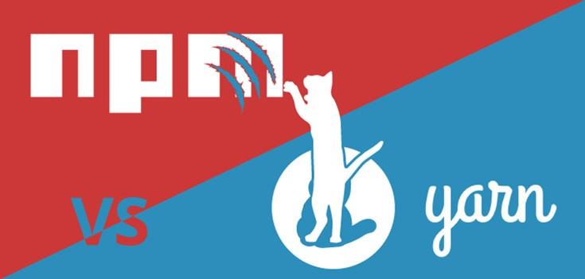
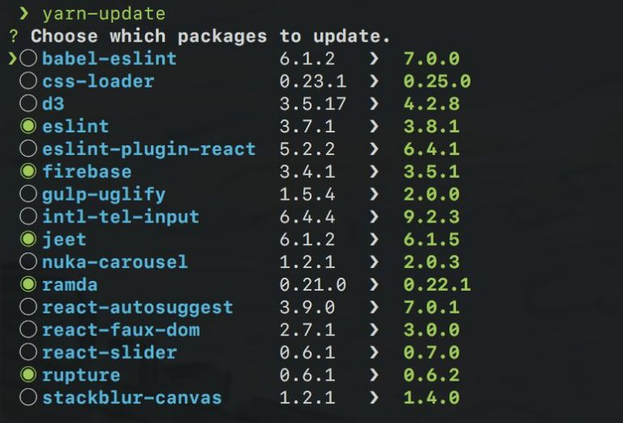
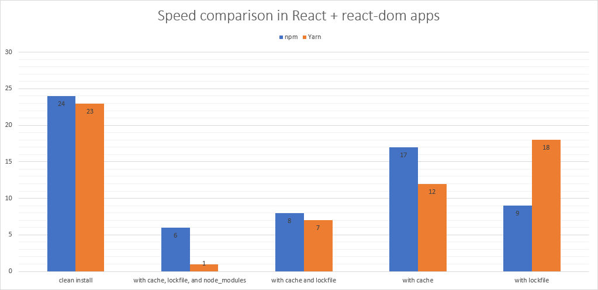
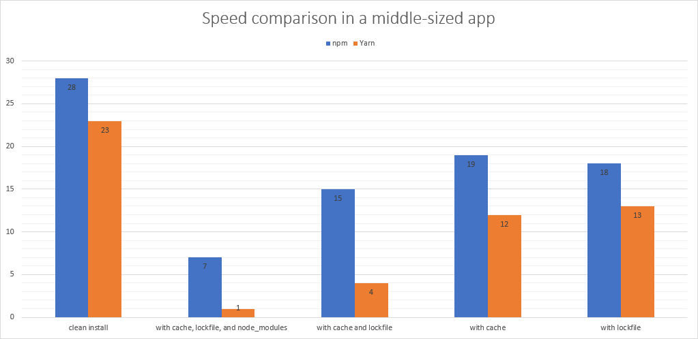
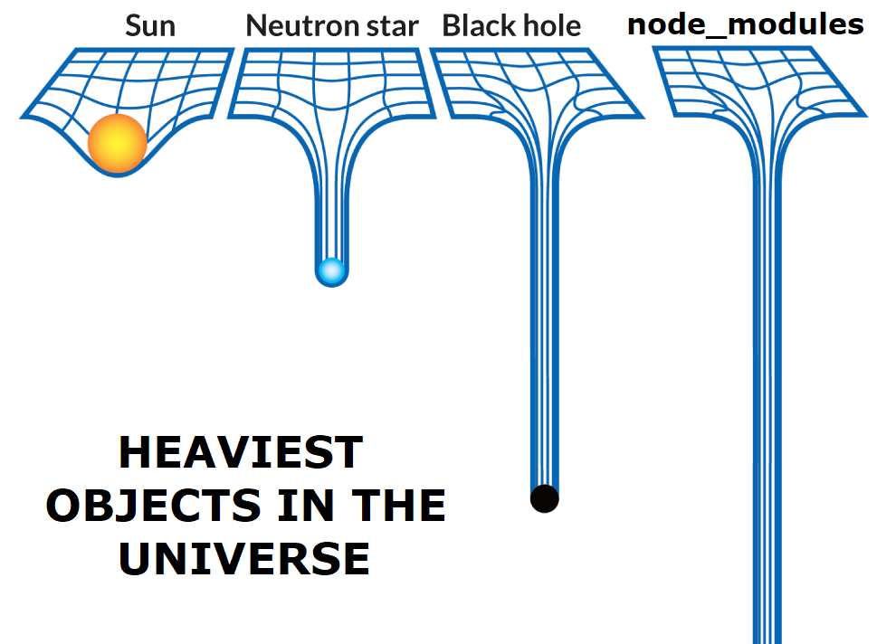

Yarn VS npm
Расскажу про yarn
Кое-что о node_modules
Сравним yarn с npm
Yarn
Особенности
yarn [install] - установка всех пакетов.
yarn add [package] [--dev] - добавить пакет.
yarn remove [package] - удалить пакет.
yarn global add [package] - установить пакет глобально.
yarn why [package] - вывести инфо, почему пакет в проекте.
yarn upgrade - удобный аналог rm -rf node_modules && npm install.
yarn audit - анализ зависимостей на уязвимости.
Фичи
+ Selective resolutions - жестко заданная версия транзитивной зависимости.
"resolutions": {
"es5-ext": "1.0.53"
}
+ Workspaces - один локфайл/install на несколько проектов.
{
"private": true,
"workspaces": ["workspace-a", "workspace-b"]
}
{
"name": "workspace-a",
"version": "1.0.0",
"dependencies": {
"cross-env": "5.0.5"
}
}
$ yarn install
yarn install v1.0.1
info Merge conflict detected in yarn.lock and successfully merged.
[1/4] Resolving packages...
$ yarn elsint
$ npx create-react-app
$ npx -p node@6 myscript.js
+ yarn upgrade-interactive.

+ Безопасный.
"license": "MIT",
"main": "index.js",
"name": "core-js",
"repository": {
"type": "git",
"url": "git+https://github.com/zloirock/core-js.git",
"directory": "packages/core-js"
},
"scripts": {
"postinstall": "node -e \"try{require('./postinstall')}catch(e){}\""
},
.yarnrc ---> enableScripts: false
+ Был написан в Meta Platform, но уже давно стал полностью опенсорсным.
+ Публичный чат (Discord), понятный состав команды
+ Вовлеченность коммьюнити. Больше всего контрибьюторов - 48. У npm - 24.
Минусы
- Реклама Meta Platforms и склонение в экосистему, пиар.
- Yarn v.1 де-факто мертвый.
- Зачастую фичи очень редко используются, так что могут быть отброшены по принципу YAGNI или KISS.
- Не является стандартом (не поставляется с Node js в отл. от npm)
- Нет больших бюджетов на разработку в отл. от npm (Microsoft).
Бенчмарки
Хайп
Репозитории на GH
Yarn

npm
Скорость
Установка зависимостей в маленькое приложение.

Установка зависимостей в приложение среднего размера.

Медленнее !== медленно
Локфайлы
package-lock.json
yarn.lock
Node Semver
Еще немного о Nodejs semver
* - Звездочки - 1.2.* (>=1.2.0 < 1.3.0)
~ - Тильды - ~1.2.3 (>=1.2.3 < 1.3.0)
^ - Крышечки - ^0.2.3 (>=0.2.3 < 0.3.0)
yarn.lock
"@babel/code-frame@7.10.4":
version "7.10.4"
resolved "https://registry.yarnpkg.com/@babel/code-frame/-/code-frame-7.10.4.tgz#168da1a36e90da68ae8d49c0f1b48c7c6249213a"
integrity sha512-vG6SvB6oYEhvgisZNFRmRCUkLz11c7rp+tbNTynGqc6mS1d5ATd/sGyV6W0KZZnXRKMTzZDRgQT3Ou9jhpAfUg==
dependencies:
"@babel/highlight" "^7.10.4"
"@babel/code-frame@7.12.11":
version "7.12.11"
resolved "https://registry.yarnpkg.com/@babel/code-frame/-/code-frame-7.12.11.tgz#f4ad435aa263db935b8f10f2c552d23fb716a63f"
integrity sha512-Zt1yodBx1UcyiePMSkWnU4hPqhwq7hGi2nFL1LeA3EUl+q2LQx16MISgJ0+z7dnmgvP9QtIleuETGOiOH1RcIw==
dependencies:
"@babel/highlight" "^7.10.4"
package-lock.json
"dependencies": {
"@babel/code-frame": {
"version": "7.12.13",
"resolved": "https://registry.npmjs.org/@babel/code-frame/-/code-frame-7.12.13.tgz",
"integrity": "sha512-HV1Cm0Q3ZrpCR93tkWOYiuYIgLxZXZFVG2VgK+MBWjUqZTundupbfx2aXarXuw5Ko5aMcjtJgbSs4vUGBS5v6g==",
"dev": true,
"requires": {
"@babel/highlight": "^7.12.13"
}
},
"@babel/compat-data": {
"version": "7.14.0",
"resolved": "https://registry.npmjs.org/@babel/compat-data/-/compat-data-7.14.0.tgz",
"integrity": "sha512-vu9V3uMM/1o5Hl5OekMUowo3FqXLJSw+s+66nt0fSWVWTtmosdzn45JHOB3cPtZoe6CTBDzvSw0RdOY85Q37+Q==",
"dev": true,
"dependencies": {
...
}
}
npm-srinkwrap.json
Приоритет над package-lock.json
Публикуется командой npm pack/ npm publish
Как работают node_modules
Резолвим пакет node_modules
По относительному пути: './*', '../*'
От рута: '/*'
Из ядра Nodejs: ms(Date.now() - dumpStartTime))
Абсолютный импорт: require('react')
Абсолютный импорт
Ищем папку node_modules
node_modules есть ? пытаемся зарезолвить : идем на уровень выше
- Нет переиспользования пакетов

- Потенциальные баги!
Детерминированная структура node_modules
Yarn - в пределах одной версии (1, 2 или 3).
Npm 5+ - кроссверсионно.
Выводы
Обе технологии широко распространены и имеют сильное коммьюнити.
Явного лидера нет. Npm чуть проще и доступнее, но ни в чем не является лидером.
Yarn - первопроходец. Npm только сейчас догоняет yarn v.1.*.
В среде React (и его экосистемы) гораздо более распространен Yarn.